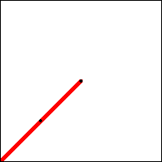
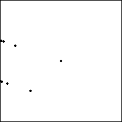
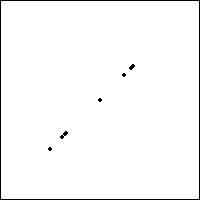
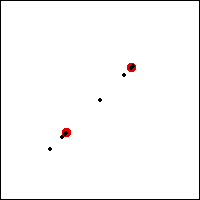
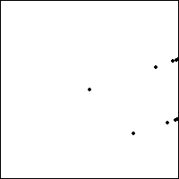

| The next simplest repeated sequence is
121212... = (12)∞.
Applying T1 and T2 alternately produces a sequence of points
converging to two points along the x-axis. |
|
 |
| Click on the animation to stop. |
|
| Here are some sequences of points generated by other 2-cycles. |
|  |
 |
| (13)∞ |
(14)∞ |
|  |
 |
| limit points of (14)∞ |
What cycle is this? |
|